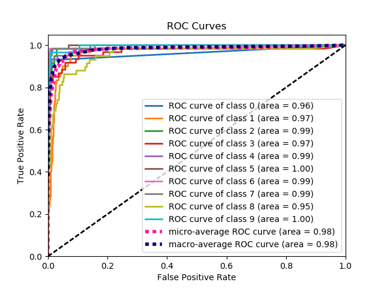

plot_roc_curve#
- scikitplot.api.metrics.plot_roc_curve(y_true, y_probas, title='ROC Curves', curves=('micro', 'macro', 'each_class'), ax=None, figsize=None, cmap='nipy_spectral', title_fontsize='large', text_fontsize='medium')[source]#
Generates the ROC curves from labels and predicted scores/probabilities
- Parameters:
y_true (array-like, shape (n_samples)) – Ground truth (correct) target values.
y_probas (array-like, shape (n_samples, n_classes)) – Prediction probabilities for each class returned by a classifier.
title (string, optional) – Title of the generated plot. Defaults to “ROC Curves”.
curves (array-like) – A listing of which curves should be plotted on the resulting plot. Defaults to
("micro", "macro", "each_class")i.e. “micro” for micro-averaged curve, “macro” for macro-averaged curveax (
matplotlib.axes.Axes, optional) – The axes upon which to plot the curve. If None, the plot is drawn on a new set of axes.figsize (2-tuple, optional) – Tuple denoting figure size of the plot e.g. (6, 6). Defaults to
None.cmap (string or
matplotlib.colors.Colormapinstance, optional) – Colormap used for plotting the projection. View Matplotlib Colormap documentation for available options. https://matplotlib.org/users/colormaps.htmltitle_fontsize (string or int, optional) – Matplotlib-style fontsizes. Use e.g. “small”, “medium”, “large” or integer-values. Defaults to “large”.
text_fontsize (string or int, optional) – Matplotlib-style fontsizes. Use e.g. “small”, “medium”, “large” or integer-values. Defaults to “medium”.
- Returns:
- The axes on which the plot was
drawn.
- Return type:
ax (
matplotlib.axes.Axes)
Example
>>> import scikitplot as skplt >>> nb = GaussianNB() >>> nb = nb.fit(X_train, y_train) >>> y_probas = nb.predict_proba(X_test) >>> skplt.metrics.plot_roc_curve(y_test, y_probas)
